Free to forkNo licence and no copyright claim: build this game under your own name, or lift one idea from it. Why?
Game overview
Skullhead is a crude, uncensored revenge game in the spirit of the violent Flash games of the early 2000s, Skull Kid and Whack Your Boss, games that existed so people could let off steam without acting on it. You play a man who sold his soul for vengeance: his head is a bare skull on a column of spine, and he works through a fictional early-1990s town place by place, with a chainsaw, an axe and a duffel of firearms.
Each place, an office, a mall, a burger joint, a farm, a trailer park, a prison, is a run of side-scrolling stages from the front entrance to the exit door, with the boss waiting at the end. The fighting uses floppy physics ragdolls from Reactorcore's Floppy Heroes remix, and limbs come off. Every finished place is marked off with a blood splat on the map in Skullhead's Death Journal.
The tone is satirical and ironic, like Postal 2, and the violence is shown as it is rather than sugarcoated. The people Skullhead comes for are archetypes built from what they do: the sneering manager, the bully, the crooked cop, the slumlord. This is a game for adults, and it's honest about being one.
Target audience
People who grew up on old violent Flash games, and anyone carrying anger at the bullies, cheats and hypocrites they've had to put up with, who wants somewhere harmless to put it.
They're frustrated by violence sold as clean fun, and by revenge stories that aim the anger at a group of people.
Keyboard and mouse, twin-stick style: move, aim, fire, dash, brace.
Game's purpose
Release: a safe place for anger at injustice to go, so it doesn't go anywhere else, and the steadier feeling afterwards.
Power and freedom: for once, the person who was always pushed around is the one nobody can stop.
It avoids making violence look appealing: wounds are shown ugly and crude. And nobody real is in it: the town and its people are fictional, built from behaviours.
Core concept
Revenge games tend to be slick power fantasies with a nameless enemy group to mow down.
Skullhead aims the anger at behaviours, not people, keeps the violence ugly so the fantasy stays a fantasy, and turns each place into a page you close for good.
The journal never fills up: there's always another place, generated fresh.
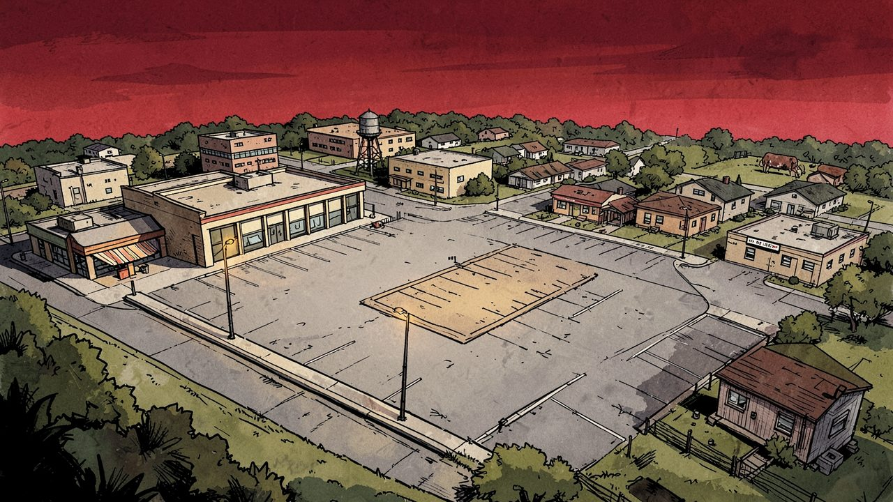
"An ordinary early-1990s town: malls, offices, burger joints and trailer parks, and somebody in each of them who made life hell for others."
Lore and story
The man
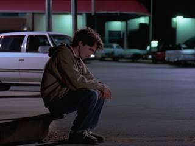
He was a young man with an American father and a Mexican mother, and no name anyone remembers. Unloved at home, bullied at school, abused at work, used by his friends, robbed and beaten by thugs. He lost someone he loved to a stray bullet from a drive-by. Bureaucracy ground him down and the police he went to were crooked. And so on, until the hatred was all there was.
The contract
So he made a deal with the devil: his soul, in exchange for the power and immortality to take revenge. What came out of it was Skullhead: an otherwise ordinary guy in khaki cargo pants, a grey t-shirt and black-and-white sneakers, whose head is now a clean white, angry skull on a bare column of spine. His mind and body belong to the vengeance now, forever. It isn't a hero's story. It's what's left of a person after everything went wrong, with the devil holding the leash.
The town
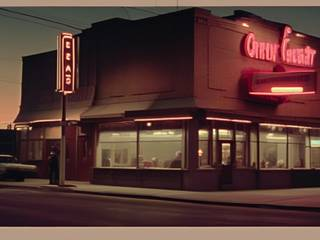
Early-1990s America: cubicle offices, mid-tier malls, burger joints, boring cow farms, trailer parks, prisons and the streets in between. White collar and blue collar, the people at the bottom and the bosses at the top, and in every place someone who sneers, cheats, bullies or abuses whatever power they have.
The job tonight
One place, from the front door to the boss's office. Then a splat on the map, and the next page.
Controls and interface
Skullhead moves with the keyboard and always turns to face the mouse pointer, which aims whatever he's holding.
Move
W A S D
Move up, left, down and right
Mouse
Turn and aim
Mouse 2
Dash the way he's facing
Space
Brace for impact, taking less damage
Weapons
Mouse 1
Fire or swing the current weapon
Q
Switch to the other carried weapon
E
Pick up, use a door or food, or swap weapons
Wheel
Zoom in or out, in slow motion while zooming
He carries two weapons, chosen before each place. Swapping with E leaves the old one lying where the new one was. Ammunition and durability are endless, so there's nothing to count: the only thing to manage is the fight.
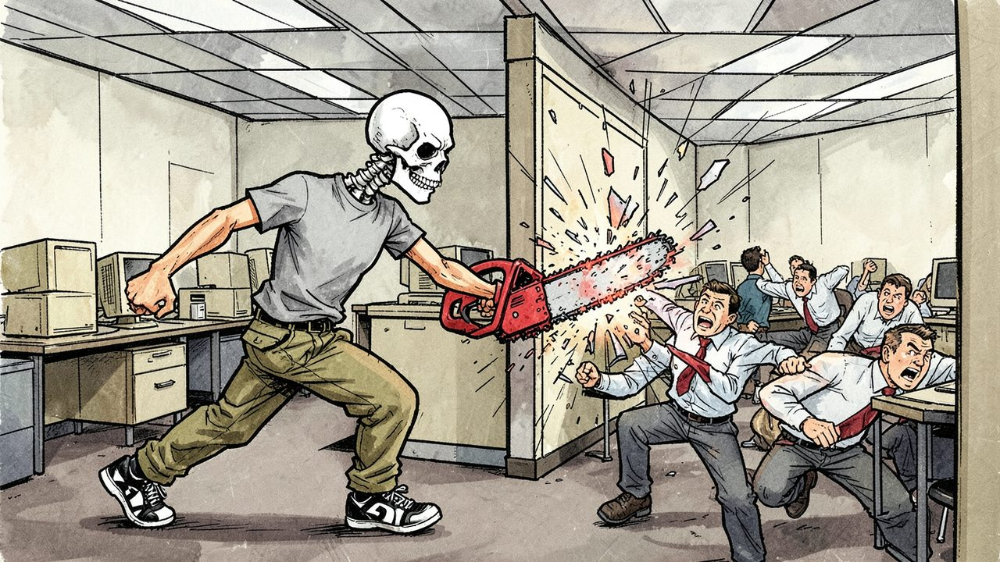
"Cubicle walls, desks and copy machines all come apart under a chainsaw. So does any cover."
Game layers
01 · Moment-to-moment
One stage, entrance to exit
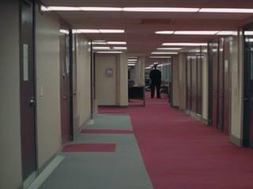
A stage scrolls sideways from the door you came in to the door you leave by, through desks, shelves, counters and whatever else the place is made of. Skullhead dashes in, braces against the hits, takes people apart limb by limb, and is restored by the devil's magic every time he does.
02 · Low metagame
One place, front door to boss
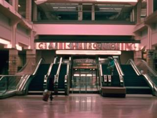
A place is a gauntlet of 5 to 15 stages, as many as you choose, generated from what kind of place it is. It follows Skull Kid's shape: in the first stage, people only run. In the middle stages, some run and some fight back with knives and guns. In the last stage sits the boss, who lectures Skullhead about his behaviour and is far too arrogant to imagine he's in any danger.
Clear the last stage and the place is marked eliminated.
03 · High metagame
The Death Journal
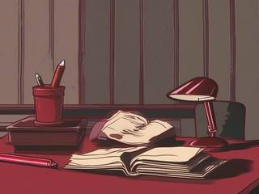
Each journal is one fictional town or part of a city, shown as a map like the intermission screen of the original Doom (1993): a blood splat on every place already eliminated, and a "you are here" arrow pointing at the next. You name the town, add its places one by one and choose what each one is, until the map is covered.
04 · Practical game flow
A stage, a place, or a torn page
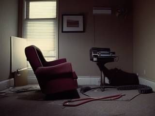
A stage takes a few minutes; a place, anywhere from a quarter of an hour to an evening, depending on its length. The game saves between stages, and the journal waits on its open page for as long as you're away.
If you don't want the journal tonight, a torn page drops you straight into a single random gauntlet that's never written down.
Game modes
Mode
What it is
For
Death Journal
A persistent town map: name the places, choose what each one is and how long, and mark them off one by one
A campaign that's yours, kept as long as the save exists
Torn page
One random ten-stage gauntlet, never recorded
Straight-forward carnage, no strings
Features and mechanics
Shown as it is
Floppy ragdolls that come apart
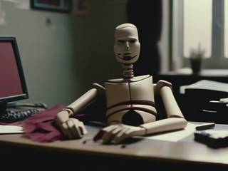
Everyone is a physics ragdoll made of separate body parts, each with its own hit points, built on Reactorcore's Floppy Heroes remix. Hit a limb hard enough and it comes off in a spray of blood. Keep hitting it and its surface changes, from intact skin to bruised, wounded, mutilated, and finally gored to the bone, after which it's inert and settles somewhere on the floor.
This is deliberate. The old Flash games showed violence without sugarcoating, and seeing how horrible it really looks made it less appealing, not more, which is the opposite of what a clean, cartoony shooter teaches.
The terms
The devil's contract
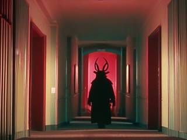
Every time Skullhead takes a limb off someone, or brings them down, the contract's dark magic restores whatever damage he'd taken, lost limbs included. Food found in a place heals him too. Only he heals; nobody else does. He's one man against everyone in the building, so the game leans into it: the safest place for him is in the thick of it.
And the contract doesn't allow a failed revenge. If he falls, the devil forces things back to the last checkpoint, like the save points of an old shooter. It's the one place in Reactorcore's designs where time bends, and the story says exactly who is bending it.
Two at a time
The arsenal
Skullhead fights with real weapons, never improvised ones: a chainsaw, a knife or an axe up close, and the firearms you'd find in an early-1990s American town, pistols, revolvers, shotguns and rifles. He starts each place with two of his choice and swaps them for whatever he finds. The people who fight back carry the same kinds of weapon, except the chainsaw: that one is his.
With ammunition and durability endless, the only choices are which two, and how close to get.
Nothing is safe
Places that come apart too
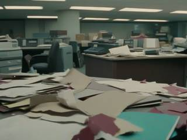
Stages are laid out like an old NES side-scroller, but with no bottomless pits and no tile grid. Instead, each one is assembled from a library of props placed at random for its kind of place: desks, partitions and copy machines; shelves and checkout counters; booths and fryers; hay bales and tractors. Some are hard walls, some are loose physics objects, and many break.
So cover is only ever temporary, and every place is a little different every time it's generated.
Built from behaviour
The people of the town
The game never asks you to hate a kind of person. Its opponents are archetypes defined by what they do, the behaviours anyone can fall into:
Archetype
Found in
When Skullhead arrives
The sneering manager
Offices, stores
Hides behind his staff, then the furniture
The bully
Anywhere
Charges in, all bravado
The crooked cop
Streets, prisons
Shoots first, from cover
The guard who enjoys it
Malls, prisons
Calls the others, then fights
The slumlord
Trailer parks
Sends his hired muscle, then hides in the office
The boss
The last stage
Lectures him, and doesn't move
Around them are the people who just run. Skullhead doesn't stop to ask, which is the tragedy of what he became.
The heart of it
The Death Journal
The journal is the campaign, and it belongs entirely to you. Start a journal by naming its town, or let the game name one. Then add places: give each a name, choose its kind from a set of presets (an office, a mall, a burger joint, a farm, a trailer park, a prison and more), and choose how many stages it has. The game generates the gauntlet; you play it.
Every cleared place gets its blood splat on the map, and the "you are here" arrow moves to the next. Any eliminated place can be played again, but the first time is the one the journal remembers: it's already been visited, canonically, for good. There's no nemesis to come back and no news ticker to read: just the map, slowly filling up, a record of every page you closed.
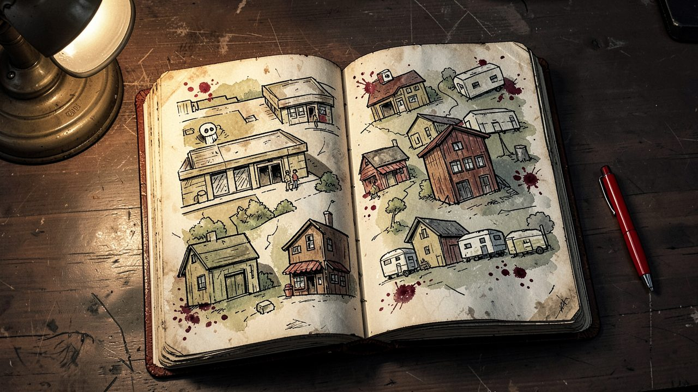
"Every place Skullhead clears gets a blood splat on the journal's map, and the arrow moves to the next."
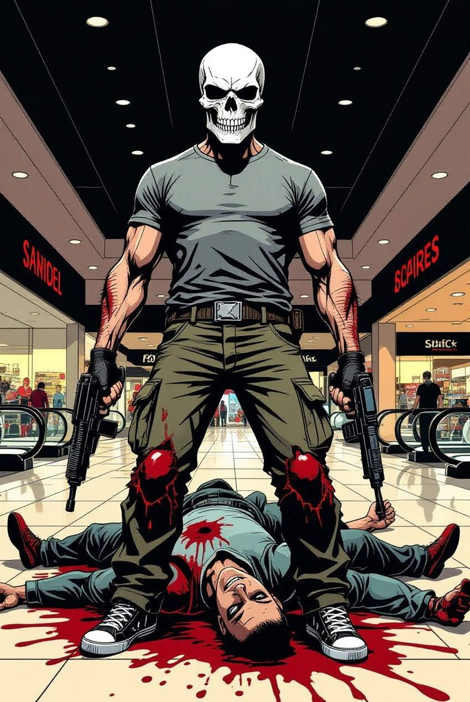
Contract, signed in red
Skullhead: Death Journal Vengeance
Clause one: the undersigned surrenders his soul, his name and his face. Clause two: in exchange he receives power, immortality, and a chainsaw. Clause three: every wound he takes is repaid by every wound he gives.
Clause four: the vengeance cannot fail. Should the undersigned fall, the moment shall be handed back to him until it doesn't.